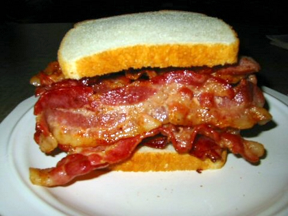

It's all about the bacon
Bacon is a cured meat prepared from a pig. It is first cured using large quantities of salt, either in a brine or in a dry packing; the result is fresh bacon (also known as green bacon). Fresh bacon may then be further dried for weeks or months in cold air, boiled, or smoked. Fresh and dried bacon must be cooked before eating. Boiled bacon is ready to eat, as is some smoked bacon, but may be cooked further before eating.
Bacon is prepared from several different cuts of meat. It is usually made from side and back cuts of pork, except in the United States, where it is almost always prepared from pork belly (typically referred to as "streaky", "fatty", or "American style" outside of the US and Canada). The side cut has more meat and less fat than the belly. Bacon may be prepared from either of two distinct back cuts: fatback, which is almost pure fat, and pork loin, which is very lean. Bacon-cured pork loin is known as back bacon.
Bacon may be eaten smoked, boiled, fried, baked, or grilled, or used as a minor ingredient to flavor dishes. Bacon is also used for barding and larding roasts, especially game, e.g. venison, pheasant. The word is derived from the Old High German bacho, meaning "buttock", "ham" or "side of bacon", and cognate with the Old French bacon.
Bacon is distinguished from salt pork and ham by differences in the brine (or dry packing). Bacon brine has added curing ingredients, most notably sodium nitrite, and occasionally sodium nitrate or potassium nitrate (saltpeter); sodium ascorbate or erythorbate are added to accelerate curing and stabilize color. Flavorings such as brown sugar or maple are used for some products. If used, sodium polyphosphates are added to improve sliceability and reduce spattering when the bacon is pan fried. Today, a brine for ham, but not bacon, includes a large amount of sugar. Historically, "ham" and "bacon" referred to different cuts of meat that were brined or packed identically, often together in the same barrel.
Bacon Product
BACON PLACEMAT
These 17" x 11-1/4" (43.2 cm x 28.6 cm) placemats look like they're made of hot and sizzling strips of fried bacon. Each soft vinyl mat has an easy-clean finish so you can quickly wipe up any spills or splatters.
BACON AIR FRESHENER
Each one measures about 4" (10.2 cm) and comes with a string for hanging.
BACON BANDAGES
Ouch! That smarts! Treat your minor cuts, scrapes and scratches with the incredible healing power of a designer bandage from Accoutrements. And if a fancy bandage isn't enough to dry up your tears, how about a FREE TOY! Each comes in a 3-3/4" (9.5 cm) tall metal pocket tin and contains a small plastic trinket to help make even the ouchiest owies feel all better in no time. The 3" x 1" (7.6 cm x 2.5 cm) Bacon Strips are cut to look like small slabs of bacon. Fifteen per tin.